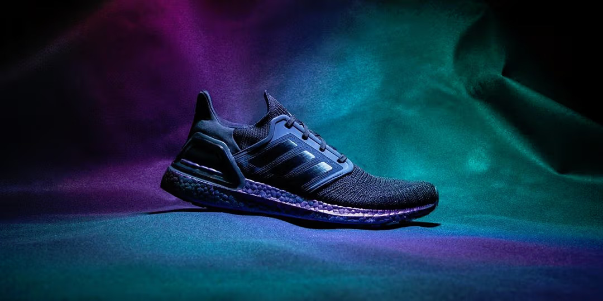
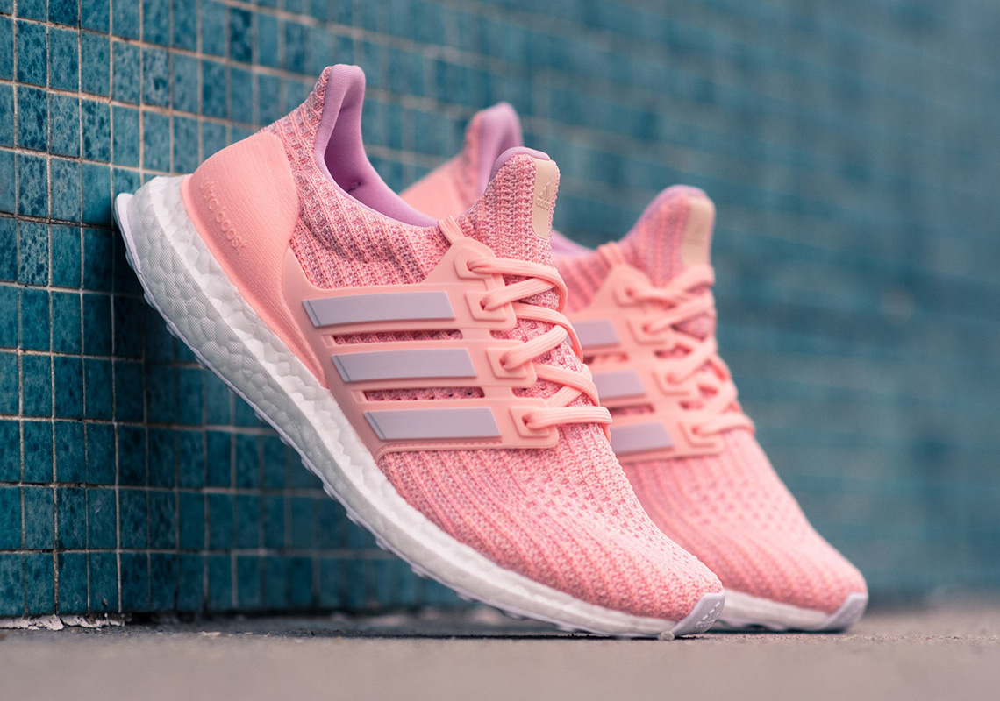

Adidas Ultraboost
Review chi tiết về adidas Ultraboost
Adidas Ultraboost là sự lựa chọn hoàn hảo với thiết kế thời trang và đệm siêu êm ái.
Điểm nổi bật:
- Đệm Boost độc quyền của Adidas.
- Kiểu dáng hiện đại, phù hợp cả đi làm lẫn chạy bộ.
- Khả năng hoàn trả năng lượng tối ưu.
Ưu điểm của giày Adidas Ultraboost
Điểm nổi bật đầu tiên của Ultraboost chính là phần đế giữa được làm từ công nghệ Boost, cung cấp độ nảy và độ đàn hồi vượt trội, mang lại sự thoải mái, giảm chấn khi tiếp đất và hoàn trả năng lượng hiệu quả, qua đó cải thiện hiệu suất chạy bộ. Đế ngoài bằng cao su Continental cũng mang lại độ bám dính cao, giúp người chạy an tâm trên mọi địa hình. Ultraboost cũng rất được ưa chuộng nhờ vào thiết kế hiện đại, sang trọng với phần upper bằng vải Primeknit thoáng khí và mềm mại. Ngoài chạy bộ, Ultraboost cũng phù hợp để sử dụng cho các hoạt động như tập gym, yoga hay các hoạt động thể thao khác. Bên cạnh đó, Ultraboost sở hữu vẻ ngoài thanh lịch và hiện đại, với sự đa dạng về màu sắc, rất dễ phối hợp với nhiều phong cách thời trang khác nhau, phù hợp để sử dụng trong cả hoạt động thể thao lẫn đời thường.

Nhược điểm của giày adidas Ultraboost
Chính những đặc điểm nổi bật trên mà adidas Ultraboost được biết đến là dòng giày cao cấp, nên có mức giá bán lẻ khá cao so với một số mẫu giày chạy bộ khác. Mặc dù sản phẩm được đánh giá là vẫn nhẹ hơn nhiều so với các dòng giày trước đây, tuy nhiên Ultraboost vẫn được nhiều người cho là hơi nặng so với một số mẫu giày chạy bộ khác trên thị trường. Ultraboost được thiết kế để phù hợp với hầu hết các hoạt động chạy bộ trên đường phố, nhưng có thể không đáp ứng tốt khi sử dụng trên các địa hình khác như đường sỏi đá hay đường đất.
Một số mẫu giày adidas Ultraboost nổi bật
Trong dòng sản phẩm adidas Ultraboost, một số mẫu giày nổi bật được biết đến như: Ultraboost Light, Ultraboost 1.0 đều sở hữu thiết kế và công nghệ hiện đại, phù hợp với nhu cầu của người chạy bộ. Dòng giày này có một số điểm khác biệt ở hai phiên bản dành cho nam và nữ, cụ thể như sau:
- Giày chạy adidas Ultraboost Nam: Phiên bản nam thường có form dáng rộng và sâu hơn, đáp ứng tốt hơn cho những bàn chân to và rộng của nam giới. Hệ thống đệm giữa của phiên bản nam cũng dày hơn, chịu được nhiều lực tác động từ những vận động viên nam.
- Giày chạy adidas Ultraboost Nữ: Phiên bản nữ có thiết kế nhỏ gọn, tinh tế hơn, thường có phần upper và đế mỏng hơn, phù hợp với cấu tạo bàn chân nữ giới, các màu sắc và họa tiết cũng nữ tính hơn. 

Phiên bản nam thường nặng hơn khoảng 20-30g so với phiên bản nữ do kích thước lớn hơn. Tuy nhiên, adidas đã tối ưu độ đàn hồi của công nghệ Boost để bù đắp phần chênh lệch về trọng lượng, giúp cả hai phiên bản đều cung cấp cảm giác đàn hồi và hấp thụ lực tương tự nhau.